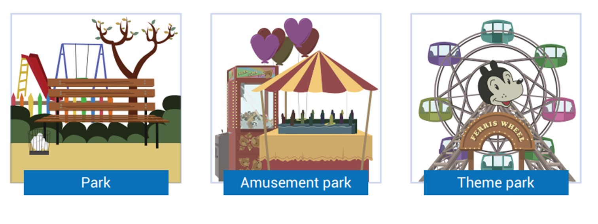
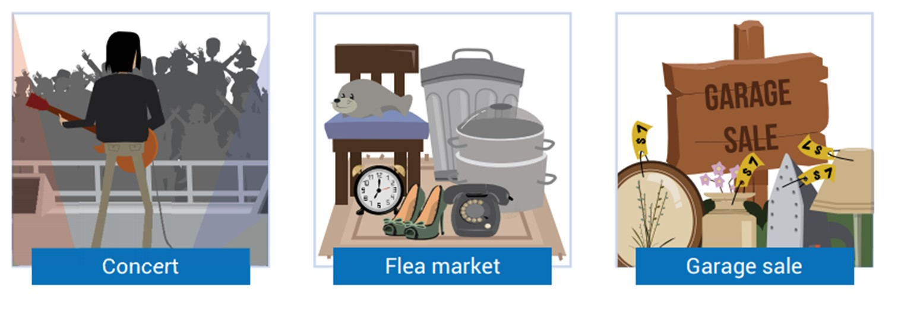
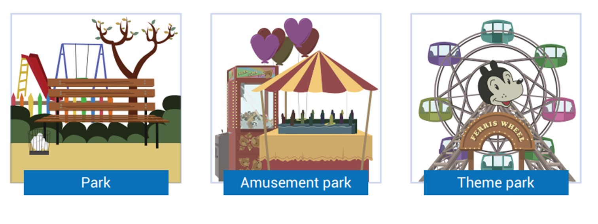
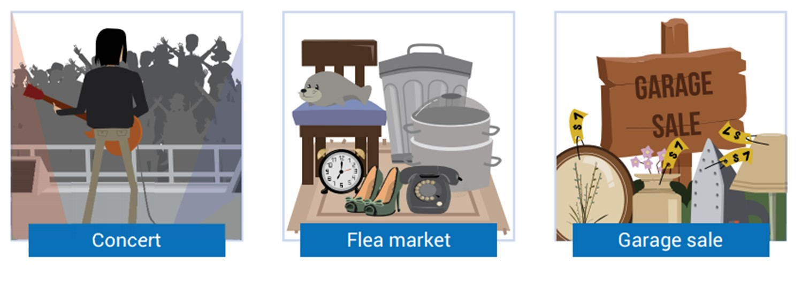

Tópico 5: Restaurante, alimentação e bebidas; Saúde, corpo humano e doenças; Locais e atividades de lazer
3.1 Having fun in the city
Dube ainda está bastante deprimido depois da discussão entre ele e Christine. Billy, preocupado, tenta animar o amigo levando-o para passear em um theme park. Em alguns momentos da conversa, os garotos se referem a ações ocorridas no passado, acompanhe o diálogo a seguir.
Billy: You didn’t get the message, did you?
Dube: It’s not that easy, Billy. I had everything planned, and she tells me that she’s leaving town!
Billy: Maybe you’re overreacting; maybe it’s not that big of a deal.
Dube: Yeah, I do need to cool down.
Billy: You should go for a ride on the roller coaster.
Dube: Yeah, it is winter, but if it’s open, I’ll go. It’s a great way to chill out. Aren’t you coming?
Billy: Nah, I’m going to meet Carly at the Ferris wheel.
Dube: What a womanizer. See ya around.
Billy: Goodbye, chap.
Os theme parks são locais de entretenimento onde muitas pessoas buscam diversão em seus momentos de descanso. Existem outras atividades de lazer que podemos realizar e outros lugares que podemos visitar on weekend. Acompanhe o vocabulário relacionado a fun places.
3.2 Fun places
Quando se trata de diversão, existem vários locais onde as pessoas reúnem-se em seu leisure time. Veja alguns deles a seguir:
 



No diálogo que você acompanhou, Dube e Billy conversaram sobre algumas atrações que Dube poderia experimentar para tentar se descontrair um pouco. Veja, a seguir, o vocabulário referente a atrações oferecidas em um amusement park ou em um theme park:
3.3 Leisure activities
Neste tópico você poderá relembrar alguns verbos associados à leisure activities. Nos exemplos que acompanham, os verbos estão no passado, pois se tratam de ações que já aconteceram. Acompanhe a seguir alguns verbos regulares:
To play: brincar
I played with my dog this morning.
To play (a musical instrument): tocar instrumento musical
He played guitar last night.
To play game: jogar + jogo/ esporte
We played some board games on Sunday.
To cycle: pedalar, andar de bicicleta
He cycled from home to work last Monday.
To jog: correr
She jogged for an hour after school.
To hike: fazer (uma) caminhada
They hiked in Scotland last spring.
To skate: patinar
She skated beautifully at championship.
To roller-skate: patinar (sobre rodas)
He roller-skated along the street.
To sail: velejar
They sailed for hours yesterday.
To ski: esquiar
He skied for down the montain at a high speed.
To surf: surfar
I surfed in Hawaii last summer.
To dance: dançar
We danced a lot at the party.
To listen to: escutar
This morning I listened to music in my bedroom.
To watch: assistir
He watched a horror movie on Saturday.
He painted a plate of fruit on canvas.
To cook: cozinhar
They cooked a delicious dinner.
To visit: visitar
You visited your friends last weekend.
To walk: caminhar
I walked a lot yesterday.
Na tabela a seguir listamos alguns verbos irregulares:
To swim: nadar
She swam at the beach yesterday.
To run: correr
They ran the marathon on friday.
To read: ler
I read a great book last weekend.
To write: escrever
He wrote emails to his friends in te USA.
To do: fazer
She did some yoga exercises in the afternoon.
To sing: cantar
They sang together at the karaoke bar.

To go (somewhere): ir a (algum lugar)
She went the movies on Sunday.
To go out: sair (socialmente)
My friends and I went out last night.
To go shopping: ir fazer compras
She went shopping for clothes last week.
Aproveite para lembrar, que você pode utilizar a combinação verbo To Go + activity para referir-se a atividades físicas e alguns esportes. Quando você estiver falando no passado, o Go é o verbo que indicará este tempo. Observe:
| Present | Past |
|---|---|
| to go dancing | went dancing |
| to go swimming | went swimming |
| to go sailing | went sailing |
3.4 Past Simple - affirmative form: regular verbs
No domingo à noite, Carly conversa com Christine sobre o que fez durante o final de semana. Veja:
Christine: So, Carly, what did you do over the weekend? Did you go out on Saturday? I didn’t see you or Rosa all weekend!
Carly: Yeah, I know… Well… On Saturday it was snowing, so I stayed home.
Christine: Ahan…
Carly: On Sunday the weather got better, there was even a bit of sunshine, so we went to Six Flags Park.
Christine: Ahan… the amusement park… Did you try all the rides?
Carly: Some were closed for winter, but we had a ride on most attractions and we enjoyed the park so much… and I went on the Ferris wheel with Billy!
Christine: Hmm…
Carly: What about you? How was your weekend?
Christine: It was terrible… I decided to stay in my bedroom all weekend and avoid Dube. On Saturday I read a book, listened to some music and I watched TV, but everything reminded me of him. Then on Sunday I slept all morning and in the afternoon I wrote an article. At night I went to bed quite early. I didn’t have lunch or dinner. I thought of my miserable life all night long when I finally slept! I didn’t call my family as well….
Carly: Oh, I’m sorry… but a calm weekend was important for you to organize your plans.
Christine: It truly was! And... did you hear anything from Dube?
Carly: Yes, I did!
Carly e Christine estão referindo-se a ações que aconteceram over the weekend, por este motivo, os verbos que designam estas ações estão no passado.
Ao estudar o Past Simple, que este tempo verbal se limita a ações concluídas e que ocorreram em um momento determinado (quer dizer, sabido ou conhecido) e específico. Seus verbos dividem-se em dois grupos, regular e irregular. Aos verbos regulares acrescenta-se a terminação -ed. Já os irregulares assumem diferentes conjugações.
Em português, dizer: “Eu fui ao cinema” e “Eu fui ao cinema ontem”, não implica utilizar tempos verbais diferentes, é apenas uma questão de se dar mais informação. Já em inglês, o fato de especificar quando (no passado) a ação ocorreu indica o uso do Past Simple. Observe o exemplo:
- Nós dançamos no pub ontem.
- We danced at the pub yesterday.
No exemplo que você acaba de ler, o uso do advérbio de tempo yesterday indica que a oração deve empregar o PastSimple. E danced por ter a terminação -ed pertence ao grupo dos regular verbs.
É necessário um pouco de atenção à escrita dos regular verbs ao acrescentar-se o -ed, pois podem acontecer modificações. Observe:
Se o verbo já termina em “e”, não é necessário repeti-lo: apenas acrescenta-se “d”. Por exemplo:
| Infinitive | Past simple |
|---|---|
| cycle | cycled |
| skate | skated |
Se o verbo terminado em “y” for precedido por uma vogal, apenas acrescenta-se o -ed. Entretanto, se ele terminar em “y” precedido por uma consoante, retira-se o “y” e acrescenta-se -ied. Observe:
| Infinitive | Past simple |
|---|---|
| play | played |
| study | studied |
Se o verbo tem uma sílaba e suas três últimas letras são a sequência consoante + vogal + consoante (CVC), antes de o -ed ser acrescentado repete-se a última letra do verbo. Verifique:
| Infinitive | Past simple |
|---|---|
| stop | stopped |
| drop | dropped |
| jog | jogged |
| plan | planned |
O mesmo ocorre se o verbo tiver as seguintes características: duas sílabas; suas três últimas letras forem uma sequência de consoante + vogal + consoante (CVC); a sílaba tônica (stressed syllable) for a última. Por exemplo:
| Infinitive | Past simple |
|---|---|
| regret | regretted |
Se o verbo termina em “ic”, acrescenta-se “k” antes do -ed. Por exemplo:
| Infinitive | Past simple |
|---|---|
| panic | panicked |
As regras apresentadas se aplicam aos verbos regulares. A seguir você conhecerá a conjugação de alguns verbos irregulares do Past Simple.
3.5 Past Simple - affirmative form: irregular verbs
Em relação aos irregular verbs, é inevitável ter que memorizar suas formas de Past Simple. Para estudá-las, os verbos podem ser organizados em grupos, de acordo com a escrita. Acompanhe:
- Verbos que não mudam sua forma:
| INFINITIVE | PAST SIMPLE | PORTUGUÊS |
|---|---|---|
| to cost | cost | custar |
| to cut | cut | cortar |
| to fit | fit | servir; caber |
| to hurt | hurt | ferir; machucar; doer |
| to let | let | deixar; permitir |
| to put | put | colocar |
| to quit | quit | deixar; abandonar (uma atividade) |
| to read | read | ler |
| to shut | shut | fechar |
- Verbos que mudam sua forma:
| INFINITIVE | PAST SIMPLE | PORTUGUÊS |
|---|---|---|
| to begin | began | começar |
| to break | broke | quebrar |
| to bring | brought | trazer |
| to build | built | construir |
| to buy | bought | comprar |
| to choose | chose | escolher |
| to drink | drank | beber |
| to eat | ate | comer |
| to feel | felt | sentir |
| to fly | flew | voar |
| to forget | forgot | esquecer |
| to get | got | conseguir |
| to give | gave | dar |
| to have | had | ter; possuir |
| to hide | hid | esconder |
| to know | knew | saber; conhecer |
| to leave | left | sair; deixar |
| to lose | lost | perder |
| to make | made | fazer |
| to meet | met | encontrar (pessoa) |
| to pay | paid | pagar |
| to ride | rode | andar |
| to say | said | dizer |
| to see | saw | ver |
| to sell | sold | vender |
| to send | sent | enviar |
| to show | showed | mostrar |
| to sing | sang | cantar |
| to sit | sat | sentar-(se) |
| to sleep | slept | dormir |
| to speak | spoke | falar |
| to spend | spent | gastar (dinehiro)/ passar (tempo) |
| to take | took | pegar |
| to teach | taught | ensinar |
| to tell | told | contar |
| to think | thought | pensar; achar |
| to understand | understood | compreender |
| to wake | woke | acordar |
| to wear | wore | vestir; usar |
| to write | wrote | escrever |
3.6 Past Simple - negative and interrogative forms
Nas Lessons anteriores você estudou o Present Simple e o uso do verbo auxiliar do. Antes de conhecer o auxiliar do passado, veja alguns exemplos do uso deste auxiliary verb no presente, isto é, Present Simple:
| Affirmative | Negative | Interrogative |
|---|---|---|
| They go to the park on Sundays. | They don’t go to the park on Sundays. | Do they go to the park on Sundays? |
| She enjoys the rides on the roller coaster. | She doesn’t enjoy the rides on the roller coaster. | Does she enjoy the rides on the roller coaster? |
Para formar o Past Simple, substitui-se do (auxiliar verb no presente) por did (auxiliar verb no passado).
No diálogo a seguir, Christine não contém sua curiosidade, e pergunta a Carly sobre Dube. Observe o modo como as ações do passado estão sendo contadas:
Christine: And... did you hear anything from Dube?
Carly: Well…. I know he’s pretty upset! He went to the theme park with Billy. He didn’t really enjoy the rides! They talked about you... and Dube misses you, but he didn’t like your reaction at the restaurant… He won a duck toy at the high striker and threw it away.
Christine: I also didn’t like the fact but he doesn’t want me to go to NY. See, I don’t wanna hear from Dube anymore! And I didn’t want that stupid duck toy anyway...!
Carly: O... K…
Observe que na pergunta de Christine sobre Dube ela utilizou did, que está posicionado antes do sujeito. Veja:
- Did you hear anything from Dube?
Já nas frases negativas, as garotas usam didn’t que é a contração de did junto à partícula negativa not. Verifique:
- He didn’t really enjoy the rides!
A tabela a seguir sintetiza o uso do Past Simple nas formas afirmativas (uso dos verbos regulares e irregulares), negativas (uso do didn’t e verbo no infinitivo) e interrogativas (uso do did antes do sujeito e verbo no infinitivo):
| Affirmative | Negative | Interrogative |
|---|---|---|
| He went to the theme park. | He didn’t go to the theme park. | Did he go to the theme park? |
3.7 Pronunciation of -ed endings
Os sons da língua materna muitas vezes influenciam a forma como as pessoas pronunciam os da língua estrangeira. No caso do português e do inglês, o final -ed dos verbos regulares costuma gerar um pequeno problema para os brasileiros, pois ele não é pronunciado como se imagina ou como é nossa tendência natural, quer dizer, como se fosse “êd” ou “éd”.
Existem três possíveis pronúncias para o final -ed, e qual delas deve ser utilizada depende do som final do verbo no infinitivo. Observe:
Verbos terminados em som de l - n - m - r - b - v - g - w - y - z ou ditongos têm o final -ed com a pronúncia de /d/.
| Infinitive | Past Simple |
|---|---|
| to call | called |
| to clean | cleaned |
| to perform | performed |
| to repair | repaired |
| to comb | combed |
| to live | lived |
| to tag | tagged |
| to allow | allowed |
| to cry | cried |
| to buzz | buzzed |
| to play | played |
Verbos terminados em p - k - s - ch - sh - f - x têm o final -ed com a pronúncia de /t/.
| Infinitive | Past Simple |
|---|---|
| to stop | stopped |
| to look | looked |
| to miss | missed |
| to watch | watched |
| to wash | washed |
| to stuff | stuffed |
| to mix | mixed |
Verbos terminados em t e d têm o final -ed com a pronúncia de /id/.
| Infinitive | Past Simple |
|---|---|
| to end | ended |
| to add | added |
| to hunt | hunted |
| to need | needed |
| to fold | folded |
| to sound | sounded |
| to count | counted |
Repetir essas palavras ajudará a aperfeiçoar a sua pronúncia.
3.8 Theme parks in the USA
One of the favorite leisure activities for American people and for tourists visiting the USA is going to an amusement park or a theme park. They consist of a group of entertainment attractions, rides, and other events in a location for the enjoyment of large numbers of people. In common language, the terms theme park and amusement park are often synonymous. However, a theme park can be regarded as a distinct style of amusement park. A theme park has landscaping, buildings, and attractions that are based on one or more specific themes or stories, such as a movie, comics or cartoon characters and even wild and sea animals.
The amusement park industry’s offerings range from large theme parks such as Walt Disney World and Universal Studios Hollywood to smaller and medium-sized theme parks. Even simpler theme parks aimed at smaller children have emerged, such as Legoland. Traditional amusement parks now also have these competition areas in addition to their thrill rides.
Amusement parks survive from admission fees paid by guests attending the park, and their profit is complemented by parking fees, food and beverage sales and souvenirs.
Practically all amusement parks operate using one of two admission principles: pay-as-you-go or pay-one-price. In amusement parks using the pay-as-you-go scheme, a guest enters the park at little or no charge. He/ she must then purchase rides individually, either at the attraction’s entrance or by purchasing ride tickets (or a similar exchange method, like a token). On the other hand, an amusement park using the pay-one-price scheme will charge guests a single, large admission fee. The guests can then use most of the attractions in the park as often as they wish during their visit. A daily admission pass (day pass) is the most basic fare on sale, but there are season tickets which offer admission for the entire operating year (plus special privileges for the newest attractions), and express passes (or VIP) passes which give holders priority in the lines for popular attractions.
3.9 Resumo e glossário
Glossary
Overreacting: exagerando
Chill out: espairecer
Womanizer: cafajeste
Leisure time: tempo de lazer
Party: festa
The movies/cinema: cinema
Theater: teatro
Park: parque
Amusement park: parque de diversões
Theme park: parque temático
Concert: concerto/show
Flea market: mercado de pulgas
Garage sale: venda de garagem
Ferris wheels: roda-gigante
Roller coaster: montanha-russa
Water rides: tobogãs
Dark rides: trem fantasma
To be regarded: ser considerado
Landscaping: paisagismo
Buildings: prédios
To range: variar
Smaller: menor(es)
Simpler: mais simples
Have emerged: surgiram
Admission fees: taxa de entrada
No charge: sem pagar
To purchase: comprar, adquirir
Either... or...: ou... ou ...
Exchange method: método de troca
Token: ficha (tipo moeda)
To charge: cobrar
Single: único/a
As often as: tão frequentemente (tantas vezes) quanto
Wish: querer / desejar
Fare on sale: tarifa à venda
Entire: inteiro
The newest: as atrações mais novas
Holders priority: prioridade aos portadores